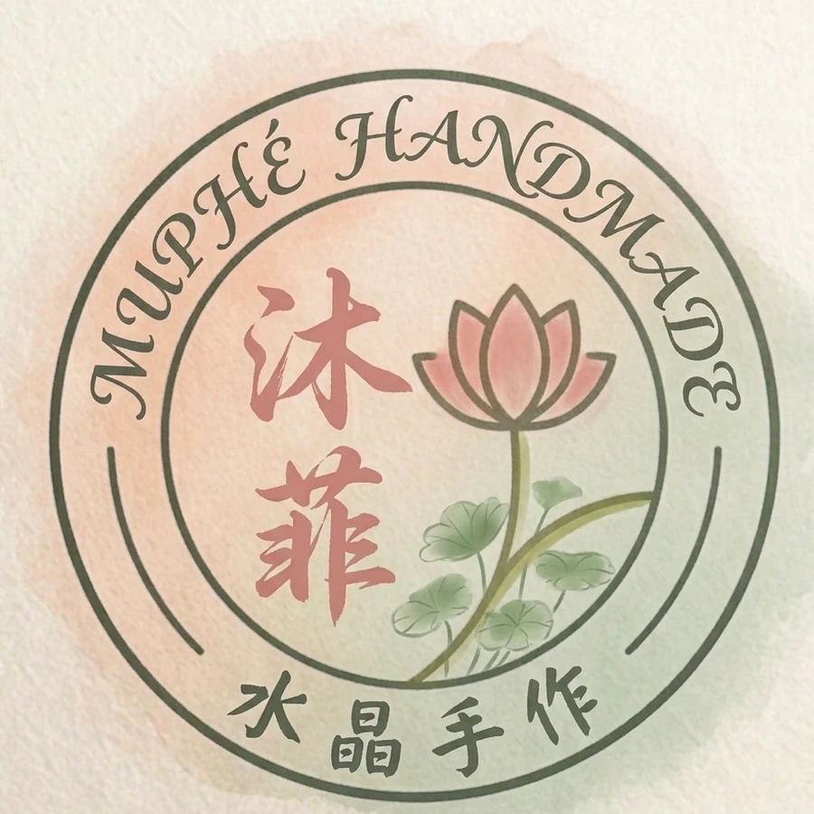
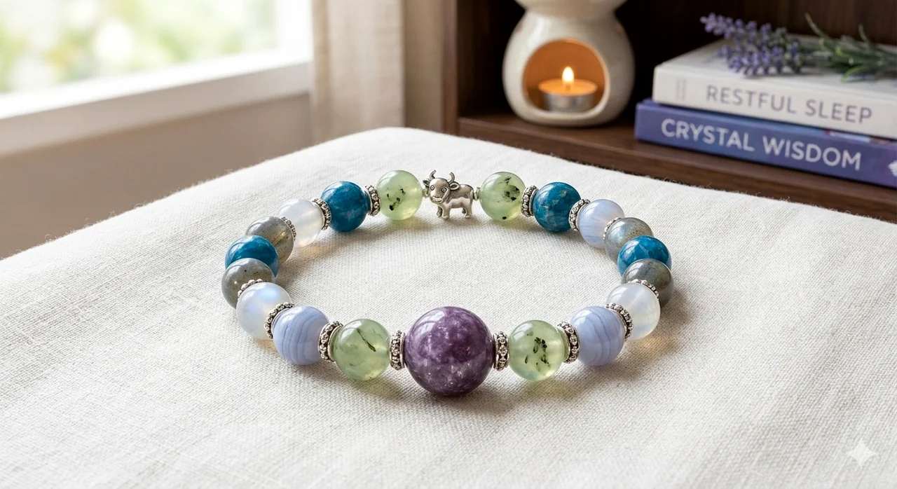
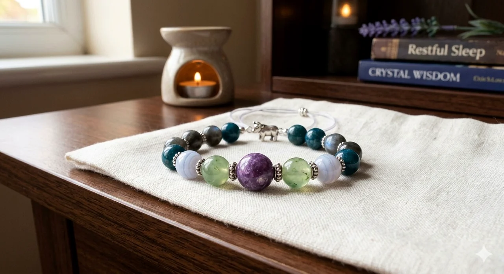
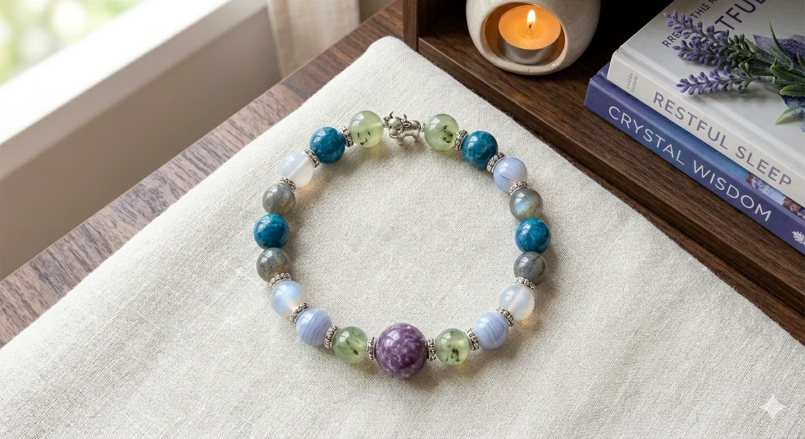
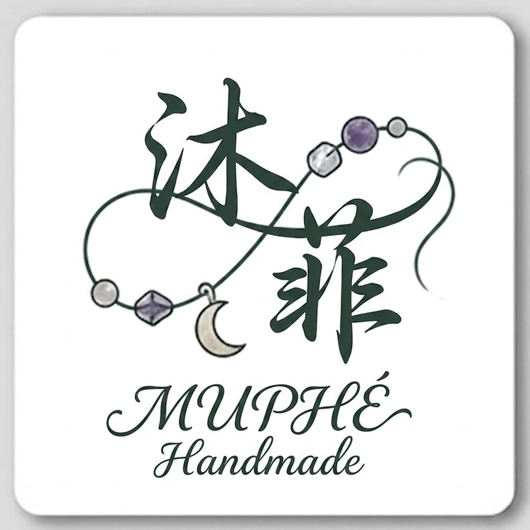

Work Mode
上班族補氣場
放在職場、創作、接案與財運行動的入口，對應需要專注和決策的客群。

MUPHÉ Handmade 沐菲水晶不是考卷答案，是今天上場前的狀態裝備。
手作手鍊 場景導購 原礦擴香Scene Finder
用生活語言找到商品，再用晶種、色系、功效和尺寸做第二層篩選。初次買水晶也能快速知道哪一款適合自己。
Scene Moodboard
這些概念圖適合當場景導購與品牌情境，不取代商品主圖。使用者看完能立刻理解：沐菲不是只賣珠子，而是在賣一個可以切換狀態的日常片段。
放在職場、創作、接案與財運行動的入口，對應需要專注和決策的客群。

適合接到原礦、擴香、職場防小人的內容。

對應深度關機沉睡、音頻儀式和療癒內容。

可放在香氛、空間擴香與品牌故事延伸。

適合水晶百科、保養淨化與入門教學頁。
Launch Collection
商品頁固定說清楚：適合誰、什麼情境戴、用了哪些晶種、尺寸材質、淨化保養、包裝內容和可加購儀式。
Phase 2 Value Add
首發先用場景角色建立差異化；第二階段可加上 QR Code 音頻、精油小禮與原礦擴香，把客單價往上推。
每款商品附 3 分鐘專屬音頻，可放在感謝卡 QR Code。
高品質基礎精油小分裝，搭配火山石、木質珠或擴香原礦。
白水晶簇、粉晶原石與調香精油，主打「用氣味啟動水晶結果」。
Gift Ready
禮物套組用「狀態祝福」包裝，適合生日、面試、新工作、搬家、失戀後重啟和期末衝刺。
手作手鍊、白水晶碎石、祝福小卡與收納袋。
用 3 種基本場景入門，送自己或送朋友都不會太重。
放在鍵盤旁邊，提醒自己界線、專注與呼吸。
Crystal Guide
不逼客人背晶種，讓每一篇都能回到「我現在需要哪一種狀態」。
先從生活問題切入，再看紫水晶、粉晶、白水晶、黑曜石等對應感受。
每款手鍊可選尺寸，客製款會依手圍調整珠數與整體節奏。
避免長時間泡水、碰撞和化學清潔，收納前以軟布擦拭。

Brand Story
沐菲相信手作可以很小、很慢，也可以很聰明。初期不靠大庫存砸錢，而是用低買高賣、洞察需求、順應潮流和持續研發，培養樂樂做生意的頭腦。
我們把每一串水晶手鍊做成生活場景裡的角色切換器：該發光時發光，該拒絕時拒絕，該休息時把腦袋關機。
FAQ
把會影響下單的問題放在同一區，降低第一次購買的猶豫。
用軟尺貼著手腕量一圈，喜歡貼手可加 0.5 公分，喜歡寬鬆可加 1 公分。客製款會依手圍微調珠數。
可客製商品會標示「可客製」。可調整尺寸、主色感與少量晶種，若變動太大會另外報價。
天然水晶有雲霧、冰裂、礦缺與色差，每顆都不完全相同。商品照呈現的是整體風格與配色方向。
現貨約 2-4 個工作天寄出；客製或預購商品依頁面標示時間製作。
非客製商品保持全新可依平台規範申請退換；客製尺寸、客製晶種與已拆封擴香用品不適用一般退換。
日常以軟布擦拭，避免泡水、碰撞、香水與清潔劑。可用白水晶碎石、月光或靜置方式做溫和淨化。